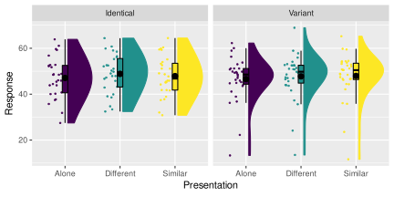

Chapter 8 Repeated-measures ANOVA
In this Chapter, we will focus on performing repeated-measures ANOVA with R.
We will use the same data analysed in Chapter 10 of SDAM, which is from an
experiment investigating the “cheerleader effect.” The dataset is
available in the sdamr package as cheerleader. We can load it from there,
and inspect the first six cases, as usual:
library(sdamr)
data("cheerleader")
head(cheerleader)## Participant Age Sex Task LineClickAccuracy Excluded WhyExcluded
## 1 1 47 Male Identical-Distractors 0.1361274 0 <NA>
## 3 1 47 Male Identical-Distractors 0.1361274 0 <NA>
## 4 1 47 Male Identical-Distractors 0.1361274 0 <NA>
## 6 2 19 Female Identical-Distractors -0.9752861 0 <NA>
## 8 2 19 Female Identical-Distractors -0.9752861 0 <NA>
## 9 2 19 Female Identical-Distractors -0.9752861 0 <NA>
## Item Response
## 1 Alone 52.71289
## 3 Control_Group 56.15966
## 4 Distractor_Manipulation 53.27871
## 6 Alone 52.47199
## 8 Control_Group 55.29972
## 9 Distractor_Manipulation 55.17647This dataset is a little messy, and includes participants who were excluded by the authors. So let’s first clean it up a little:
dat <- cheerleader
# remove participants which should be excluded
dat <- subset(dat, Excluded == 0)
# get rid of unused factor levels in Item by
dat$Item <- factor(dat$Item)Another thing is that the labels of the factors don’t correspond to the ones I used in writing the SDAM chapter.
Relabelling factors is somewhat tedious with base R. It’s easier to use the fct_recode function from the forcats package (Wickham 2021a).
This function takes a factor as its first argument, and then in the remaining arguments, you
can specify a new label (unquoted) for existing labels (quoted). As usual,
if you don’t have this package installed, you would first need to run install.packages("forcats") before running the code below:
dat$Presentation <- forcats::fct_recode(dat$Item, Different = "Control_Group", Similar = "Distractor_Manipulation")
dat$Version <- forcats::fct_recode(dat$Task, Identical = "Identical-Distractors", Variant = "Self-Distractors")Let’s have a look at the resulting data.frame:
head(dat)## Participant Age Sex Task LineClickAccuracy Excluded WhyExcluded
## 1 1 47 Male Identical-Distractors 0.1361274 0 <NA>
## 3 1 47 Male Identical-Distractors 0.1361274 0 <NA>
## 4 1 47 Male Identical-Distractors 0.1361274 0 <NA>
## 6 2 19 Female Identical-Distractors -0.9752861 0 <NA>
## 8 2 19 Female Identical-Distractors -0.9752861 0 <NA>
## 9 2 19 Female Identical-Distractors -0.9752861 0 <NA>
## Item Response Presentation Version
## 1 Alone 52.71289 Alone Identical
## 3 Control_Group 56.15966 Different Identical
## 4 Distractor_Manipulation 53.27871 Similar Identical
## 6 Alone 52.47199 Alone Identical
## 8 Control_Group 55.29972 Different Identical
## 9 Distractor_Manipulation 55.17647 Similar IdenticalLooks good! You can create a raincloud plot for this data as usual:
sdamr::plot_raincloud(data=dat, y=Response, groups = Presentation) + ggplot2::facet_wrap(~Version)
8.1 Long and wide data
The cheerleader data, and our dat data.frame is in the so-called long format.
Data in the long format is structured so that each row contains is a single meaningful observation.
Here, that translates to us having
multiple rows for one participant (e.g. there are three rows for Participant 1).
Data in the wide format has one row for each unit of observation (e.g. Participant).
For some analyses, the long format is most suitable, whilst for others the wide
format. It is therefore useful to be able to transform the data from one format
to the other. This used to be a real pain back in the days when I started
using R. Luckily, there are now tools available that make this a lot easier.
Here, we will use the pivot_longer and pivot_wider functions from the tidyr (Wickham 2021b)
package. The pivot_wider function is used to transform long-format data to the wide format.
In the id_cols argument, you can list variable which identify a “unit of observation” (e.g. Participant), as well
as other variables which don’t vary within subjects (such as condition). In the names_from
argument, you can specify a variable which identifies the within-subjects levels, which
is used to name the resulting new set of dependent variables. In the values_from
argument, you specify the variable which contains the values of the new set
of dependent variables:
wdat <- tidyr::pivot_wider(dat, id_cols = c("Participant", "Version"), names_from = Presentation, values_from = Response)
head(wdat)## # A tibble: 6 × 5
## Participant Version Alone Different Similar
## <fct> <fct> <dbl> <dbl> <dbl>
## 1 1 Identical 52.7 56.2 53.3
## 2 2 Identical 52.5 55.3 55.2
## 3 3 Identical 45.9 47.9 47.7
## 4 4 Identical 43.9 50.3 44.2
## 5 5 Identical 37.5 34.7 37.8
## 6 6 Identical 44.4 47.9 45.1Note that there are quite a few variables no longer from this new wide-format data.
This is not a problem, as we don’t need them for the present analyses (we could also
have kept these in by including them in the id_cols argument).
Also note that the class of this object is not a data.frame, but a tibble.
A tibble is a “modern re-imagining of the data.frame” (https://tibble.tidyverse.org/).
It is a central part of the tidyverse
collection of R packages, which includes the tidyr and forcats packages
we have just used, as well as the ggplot2 package, and many more. When you become more
familiar with R programming, you will likely adopt more of the functions and
principles of the tidyverse.
You can transform data from the wide format to the long format with the
pivot_longer function. In the cols argument, you need to specify
which columns in the wide format to transform into a single variable
in the long format. In the names_to argument, you can specify the
name of the resulting identifier for each value, and in the values_to
argument, you can specify the name of the variable in the long format
which contains the values:
ldat <- tidyr::pivot_longer(wdat, cols = c("Alone", "Different", "Similar"), names_to = "Presentation", values_to = "Response")
head(ldat)## # A tibble: 6 × 4
## Participant Version Presentation Response
## <fct> <fct> <chr> <dbl>
## 1 1 Identical Alone 52.7
## 2 1 Identical Different 56.2
## 3 1 Identical Similar 53.3
## 4 2 Identical Alone 52.5
## 5 2 Identical Different 55.3
## 6 2 Identical Similar 55.28.2 Repeated-measures ANOVA with separate GLMs
In Chapter 10 of SDAM, we focused on performing repeated-measures ANOVA by constructing within-subjects composite scores, and then performing separate GLM analyses on these. We will start with this approach, and analyse the full 2 (Version: Identical, Variant) by 3 (Presentation: Alone, Different, Similar) design.
8.2.1 Computing within-subjects composite scores
The within-subjects composite scores are effectively contrasts, computed for each participant. Let’s define the following contrasts:
| \(d_0\) | \(d_1\) | \(d_2\) | |
|---|---|---|---|
| Alone | 1 | \(-\tfrac{2}{3}\) | \(0\) |
| Different | 1 | \(\tfrac{1}{3}\) | \(\tfrac{1}{2}\) |
| Similar | 1 | \(\tfrac{1}{3}\) | \(-\tfrac{1}{2}\) |
We can compute each composite score from these contrasts as: \[W_{j,i} = \frac{\sum_{k=1}^g d_{j,k} Y_{i,k}}{\sqrt{\sum_{k=1}^g d_{j,k}^2}}\] For \(W_0\) (i.e. \(j=0\)), the computation in R is:
# compute the top part (numerator)
wdat$W0 <- wdat$Alone + wdat$Different + wdat$Similar
# apply scaling factor to get the correct SS
wdat$W0 <- wdat$W0/sqrt(3)Similarly, we can compute \(W_1\) and \(W_2\) as:
wdat$W1 <- (1/3)*wdat$Different + (1/3)*wdat$Similar - (2/3)*wdat$Alone
wdat$W1 <- wdat$W1/sqrt((1/3)^2 + (1/3)^2 + (-2/3)^2)
wdat$W2 <- (1/2)*wdat$Different - (1/2)*wdat$Similar
wdat$w2 <- wdat$W2/sqrt(2/4)8.2.2 Performing a repeated-measures ANOVA with separate models
We now have three new dependent variables (\(W_0\), \(W_1\), and \(W_2\)), and for each we can perform a GLM analysis. To do this, we need to set a suitable contrast for Version. As in SDAM, I will use \((\tfrac{1}{2}, -\tfrac{1}{2})\) for the Identical and Variant conditions respectively:
contrasts(wdat$Version) <- c(0.5, -0.5)We can then estimate a linear model for each composite variable. For \(W_0\), we estimate:
mod0 <- lm(W0 ~ Version, data=wdat)
summary(mod0)##
## Call:
## lm(formula = W0 ~ Version, data = wdat)
##
## Residuals:
## Min 1Q Median 3Q Max
## -59.928 -4.593 1.922 9.059 31.259
##
## Coefficients:
## Estimate Std. Error t value Pr(>|t|)
## (Intercept) 82.5764 2.1153 39.038 <2e-16 ***
## Version1 0.8647 4.2305 0.204 0.839
## ---
## Signif. codes: 0 '***' 0.001 '**' 0.01 '*' 0.05 '.' 0.1 ' ' 1
##
## Residual standard error: 16.23 on 57 degrees of freedom
## Multiple R-squared: 0.0007323, Adjusted R-squared: -0.0168
## F-statistic: 0.04177 on 1 and 57 DF, p-value: 0.8388Note that the estimated parameters are in the scale of \(W_0\), not in the scale
of the dependent variable (\(Y\)). We can get the rescaled estimates by dividing
the estimates by the scaling factor (\(\sqrt{3}\) in this case). The coefficients
functions extracts the parameter estimates from the model. Hence, the rescaled
estimates can be computed as:
coefficients(mod0)/sqrt(3)## (Intercept) Version1
## 47.675478 0.499217To obtain equivalent \(F\)-tests, we can use the Anova function from the car package:
car::Anova(mod0, type=3)## Anova Table (Type III tests)
##
## Response: W0
## Sum Sq Df F value Pr(>F)
## (Intercept) 401272 1 1523.9890 <2e-16 ***
## Version 11 1 0.0418 0.8388
## Residuals 15008 57
## ---
## Signif. codes: 0 '***' 0.001 '**' 0.01 '*' 0.05 '.' 0.1 ' ' 1The procedure for the within-subjects composite scores \(W_1\) and \(W_2\) is similar. For \(W_1\), the analysis is:
# Analysis for W1
mod1 <- lm(W1 ~ Version, data=wdat)
summary(mod1)##
## Call:
## lm(formula = W1 ~ Version, data = wdat)
##
## Residuals:
## Min 1Q Median 3Q Max
## -2.8388 -1.0661 -0.0307 0.9773 3.6227
##
## Coefficients:
## Estimate Std. Error t value Pr(>|t|)
## (Intercept) 1.057739 0.190904 5.541 8.02e-07 ***
## Version1 -0.008033 0.381808 -0.021 0.983
## ---
## Signif. codes: 0 '***' 0.001 '**' 0.01 '*' 0.05 '.' 0.1 ' ' 1
##
## Residual standard error: 1.464 on 57 degrees of freedom
## Multiple R-squared: 7.766e-06, Adjusted R-squared: -0.01754
## F-statistic: 0.0004426 on 1 and 57 DF, p-value: 0.9833coefficients(mod1)/sqrt(6/9)## (Intercept) Version1
## 1.29546036 -0.00983829car::Anova(mod1, type=3)## Anova Table (Type III tests)
##
## Response: W1
## Sum Sq Df F value Pr(>F)
## (Intercept) 65.839 1 30.6992 8.023e-07 ***
## Version 0.001 1 0.0004 0.9833
## Residuals 122.245 57
## ---
## Signif. codes: 0 '***' 0.001 '**' 0.01 '*' 0.05 '.' 0.1 ' ' 1And for \(W_2\), it is:
# Analysis for W2
mod2 <- lm(W2 ~ Version, data=wdat)
summary(mod2)##
## Call:
## lm(formula = W2 ~ Version, data = wdat)
##
## Residuals:
## Min 1Q Median 3Q Max
## -2.02844 -0.47968 -0.06555 0.36866 2.52549
##
## Coefficients:
## Estimate Std. Error t value Pr(>|t|)
## (Intercept) 0.1981 0.1184 1.673 0.0998 .
## Version1 0.5865 0.2368 2.476 0.0163 *
## ---
## Signif. codes: 0 '***' 0.001 '**' 0.01 '*' 0.05 '.' 0.1 ' ' 1
##
## Residual standard error: 0.9083 on 57 degrees of freedom
## Multiple R-squared: 0.09714, Adjusted R-squared: 0.0813
## F-statistic: 6.133 on 1 and 57 DF, p-value: 0.01626coefficients(mod2)/sqrt(2/4)## (Intercept) Version1
## 0.2801500 0.8293672car::Anova(mod2, type=3)## Anova Table (Type III tests)
##
## Response: W2
## Sum Sq Df F value Pr(>F)
## (Intercept) 2.309 1 2.7991 0.09980 .
## Version 5.060 1 6.1330 0.01626 *
## Residuals 47.026 57
## ---
## Signif. codes: 0 '***' 0.001 '**' 0.01 '*' 0.05 '.' 0.1 ' ' 1Unfortunately, there is no simple way to obtain omnibus tests by combining
these models. They can be computed “manually,” by extracting the relevant
SSR, SSE, and df terms from the models. These can then be used to compute an
\(F\)-statistic, and the \(p\)-value can then be computed by using the pf function.
This is not the most straightforward manner to obtain omnibus tests
(the following sections show how to do this in a much more convenient manner).
But to show it is doable, let’s compute the omnibus test for the main effect of
Presentation in this way. The relevant SSR, SSE, and df terms are stored
in the objects returned by the car::Anova function. We can see the structure
of this object with the str function:
str(car::Anova(mod1, type=3))## Classes 'anova' and 'data.frame': 3 obs. of 4 variables:
## $ Sum Sq : num 6.58e+01 9.49e-04 1.22e+02
## $ Df : num 1 1 57
## $ F value: num 3.07e+01 4.43e-04 NA
## $ Pr(>F) : num 8.02e-07 9.83e-01 NA
## - attr(*, "heading")= chr [1:2] "Anova Table (Type III tests)\n" "Response: W1"This shows that the car::Anova function returns a data.frame with the test
results. The first row corresponds to the test of the intercept (which reflects
the main effects of Presentation in this repeated-measures ANOVA). The last
row contains the values for the error term. The structure for the mod2 analysis
is the same. To get the relevant omnibus values, we can just take the appropriate
elements from these data.frames. To get the omnibus SSR and \(\text{df}_1\)
terms, we can use:
SSR <- car::Anova(mod1, type=3)$"Sum Sq"[1] + car::Anova(mod2, type=3)$"Sum Sq"[1]
df1 <- car::Anova(mod1, type=3)$"Df"[1] + car::Anova(mod2, type=3)$"Df"[1]And for the SSE and \(\text{df}_2\) terms, we can use:
SSE <- car::Anova(mod1, type=3)$"Sum Sq"[3] + car::Anova(mod2, type=3)$"Sum Sq"[3]
df2 <- car::Anova(mod1, type=3)$"Df"[3] + car::Anova(mod2, type=3)$"Df"[3]With these values, the \(F\)-statistic can then be computed as follows:
Fstat <- (SSR/df1)/(SSE/df2)Finally, the \(p\)-value can be obtained as
1-pf(Fstat, df1=df1, df2=df2)## [1] 4.214718e-09Note that we need to use 1-pf as the pf function computes the probability
\(P(F \leq \text{value})\), whilst we need \(P(F > \text{value})\), and this equals
\(P(F > \text{value}) = 1 - P(F \leq \text{value})\).
The steps we have just taken is a perfectly valid manner to conduct a
repeated-measures ANOVA, but it is a laborious process. An easier way
to conduct repeated-measures ANOVA is provided in the car or
afex package. Neither of these packages provide the tests for the individual
contrasts we have just obtained. But these can be computed with the emmeans
package, after conducting the omnibus tests.
8.3 Repeated-measures ANOVA with the car package
When you have data in the wide format, you can obtain a repeated-measures ANOVA
by using the Anova function from the car package (Fox, Weisberg, and Price 2021). As you will see later,
the analysis is more straightforward with the afex package, but this requires
data to be in the long format.
The first step to performing a repeated-measures ANOVA with the car package
is to perform a linear model for a multivariate dependent variable, which basically
means providing a matrix of each repeated measurement as the DV. This is done
by collating the variables within a cbind (for column-bind) argument within
the model formula:
mvmod <- lm(cbind(Alone, Different, Similar) ~ Version, data=wdat)So here, we are modelling the Alone, Different, and Similar attractiveness ratings simultaneously as a function of the Version categorical predictor. This model is basically a set of three linear regressions, as you can see from the output:
mvmod##
## Call:
## lm(formula = cbind(Alone, Different, Similar) ~ Version, data = wdat)
##
## Coefficients:
## Alone Different Similar
## (Intercept) 46.81184 48.30539 47.90920
## Version1 0.50578 1.08239 -0.09051The next step is to construct an object which reflects the structure of these
three measurements. This has to be done with a separate data.frame, with one
row for each variable included in the cbind function specifying the multivariate DV.
In this case, there is a single categorical predictor underlying all three
measurements. So our data.frame can contain a single factor:
idata <- data.frame(Presentation = factor(c("Alone", "Different", "Similar")))
idata## Presentation
## 1 Alone
## 2 Different
## 3 SimilarThe next step is to supply a useful contrast for this within-subjects factor:
contrasts(idata$Presentation) # check the levels## Different Similar
## Alone 0 0
## Different 1 0
## Similar 0 1contrasts(idata$Presentation) <- cbind(c(-2/3, 1/3, 1/3), c(0,1/2, -1/2))
contrasts(idata$Presentation)## [,1] [,2]
## Alone -0.6666667 0.0
## Different 0.3333333 0.5
## Similar 0.3333333 -0.5With these elements in place, we are finally ready to perform the
repeated-measures ANOVA. This involves calling the car::Anova function
with the multivariate linear model as the first argument, and supplying the
within-subjects structure through the idata argument. Additionally, you need to
supply a right-hand-sided formula in the
idesign argument in order to specify which effects to include as within-subjects factors.
The type=3 argument, as usual, specifies we would like to perform Type-3 SS tests.
rmaov <- car::Anova(mvmod, idata=idata, idesign = ~Presentation, type=3)
rmaov##
## Type III Repeated Measures MANOVA Tests: Pillai test statistic
## Df test stat approx F num Df den Df Pr(>F)
## (Intercept) 1 0.96395 1523.99 1 57 < 2.2e-16 ***
## Version 1 0.00073 0.04 1 57 0.83878
## Presentation 1 0.36601 16.17 2 56 2.872e-06 ***
## Version:Presentation 1 0.09730 3.02 2 56 0.05691 .
## ---
## Signif. codes: 0 '***' 0.001 '**' 0.01 '*' 0.05 '.' 0.1 ' ' 1By default, because we have used a multivariate DV, this will show a so-called
MANOVA (Multivariate ANalysis of VAriance). To obtain an ANOVA, we need to set
the multivariate argument in the summary function to FALSE:
summary(rmaov, multivariate=FALSE)##
## Univariate Type III Repeated-Measures ANOVA Assuming Sphericity
##
## Sum Sq num Df Error SS den Df F value Pr(>F)
## (Intercept) 401272 1 15008.3 57 1523.9890 < 2.2e-16 ***
## Version 11 1 15008.3 57 0.0418 0.83878
## Presentation 70 2 216.3 114 18.5675 1.047e-07 ***
## Version:Presentation 10 2 216.3 114 2.6670 0.07379 .
## ---
## Signif. codes: 0 '***' 0.001 '**' 0.01 '*' 0.05 '.' 0.1 ' ' 1
##
##
## Mauchly Tests for Sphericity
##
## Test statistic p-value
## Presentation 0.98188 0.59925
## Version:Presentation 0.98188 0.59925
##
##
## Greenhouse-Geisser and Huynh-Feldt Corrections
## for Departure from Sphericity
##
## GG eps Pr(>F[GG])
## Presentation 0.9822 1.314e-07 ***
## Version:Presentation 0.9822 0.07485 .
## ---
## Signif. codes: 0 '***' 0.001 '**' 0.01 '*' 0.05 '.' 0.1 ' ' 1
##
## HF eps Pr(>F[HF])
## Presentation 1.016935 1.046537e-07
## Version:Presentation 1.016935 7.379140e-02In addition to an ANOVA table which contains the omnibus tests for the within-
and between-subjects effects, the output provides the Mauchly sphericity test,
and subsequently the Greenhouse-Geisser and Huynh-Feldt corrected tests. The
tables corresponding to these latter two corrected tests report the
Greenhouse-Geisser and Huynh-Feldt estimates (as GG eps and HF eps respectively)
of what I have denoted as
\(\hat{\zeta}\), but is more commonly denoted as \(\hat{\epsilon}\), and the \(p\)-value
which results from applying the correction to the degrees of freedom reported
in the Univariate Type III Repeated-Measures ANOVA Assuming Sphericity table.
A notable absence is the tests of the specific contrasts. We can obtain these by performing analyses on the within-subjects composite scores, as we did in the previous section.
8.4 Repeated-measures ANOVA with the afex package
The afex package (Singmann et al. 2021) provides a convenient interface to the car::Anova() function, via its afex::aov_car() function. To use this function, the data needs to be in the long format. You can specify the model with the usual formula interface, and you don’t need to worry about a multivariate response and such things. There is one new thing, however: To specify a repeated-measures ANOVA, the formula needs to contain a special Error() argument. Within the Error argument, you first state the variable which identifies the “units of observations” (i.e. Participant in this case). Then, after a forward-slash (“/”), you list the repeated-measures factor(s). So, the way to perform the repeated-measures ANOVA with the afex package, and the long data (ldat) we created earlier, is:
afmod <- afex::aov_car(Response ~ Version*Presentation + Error(Participant/Presentation), data=ldat)## Contrasts set to contr.sum for the following variables: Versionafmod## Anova Table (Type 3 tests)
##
## Response: Response
## Effect df MSE F ges p.value
## 1 Version 1, 57 263.30 0.04 <.001 .839
## 2 Presentation 1.96, 111.97 1.93 18.57 *** .005 <.001
## 3 Version:Presentation 1.96, 111.97 1.93 2.67 + <.001 .075
## ---
## Signif. codes: 0 '***' 0.001 '**' 0.01 '*' 0.05 '+' 0.1 ' ' 1
##
## Sphericity correction method: GGafex provides an abridged ANOVA table, where the Greenhouse-Geisser correction is automatically applied
Note that afex automatically sets contrasts to contr.sum. That is useful here, as we haven’t set the contrast for Version in the ldat data.
contrasts(ldat$Version) <- c(0.5,-0.5)
ldat$Presentation <- factor(ldat$Presentation)
contrasts(ldat$Presentation) <- cbind(c(-2/3, 1/3, 1/3), c(0,1/2, -1/2))afmod <- afex::aov_car(Response ~ Version*Presentation + Error(Participant/Presentation), data=ldat, check_contrasts = FALSE)## Warning: Calculating Type 3 sums with contrasts != 'contr.sum' for: Version
## Results likely bogus or not interpretable!
## You probably want check_contrasts = TRUE or options(contrasts=c('contr.sum','contr.poly'))afmod## Anova Table (Type 3 tests)
##
## Response: Response
## Effect df MSE F ges p.value
## 1 Version 1, 57 263.30 0.04 <.001 .839
## 2 Presentation 1.96, 111.97 1.93 11.76 *** .003 <.001
## 3 Version:Presentation 1.96, 111.97 1.93 2.67 + <.001 .075
## ---
## Signif. codes: 0 '***' 0.001 '**' 0.01 '*' 0.05 '+' 0.1 ' ' 1
##
## Sphericity correction method: GGNote that we now get a warning…which we will ignore, as our contrasts are fine and we get exactly the same results.
Note that, as neither afex, nor the car::Anova package on which it relies, provides
parameter estimates for the GLM, it doesn’t really matter whether you supply
your own (sum-to-zero) contrasts, or whether you let afex pick a contr.sum() contrast
for you.
The afex package provides a convenient wrapper around the car::Anova() function, and saves you a lot
of work if you have data in the long format. I would generally recommend storing data in the long format,
as this also makes it easier to apply linear mixed-effects models. You can obtain the
results as reported by the car::Anova() function by calling the summary function:
summary(afmod)##
## Univariate Type III Repeated-Measures ANOVA Assuming Sphericity
##
## Sum Sq num Df Error SS den Df F value Pr(>F)
## (Intercept) 192932 1 15008.3 57 732.7366 < 2.2e-16 ***
## Version 11 1 15008.3 57 0.0418 0.83878
## Presentation 45 2 216.3 114 11.7553 2.283e-05 ***
## Version:Presentation 10 2 216.3 114 2.6670 0.07379 .
## ---
## Signif. codes: 0 '***' 0.001 '**' 0.01 '*' 0.05 '.' 0.1 ' ' 1
##
##
## Mauchly Tests for Sphericity
##
## Test statistic p-value
## Presentation 0.98188 0.59925
## Version:Presentation 0.98188 0.59925
##
##
## Greenhouse-Geisser and Huynh-Feldt Corrections
## for Departure from Sphericity
##
## GG eps Pr(>F[GG])
## Presentation 0.9822 2.62e-05 ***
## Version:Presentation 0.9822 0.07485 .
## ---
## Signif. codes: 0 '***' 0.001 '**' 0.01 '*' 0.05 '.' 0.1 ' ' 1
##
## HF eps Pr(>F[HF])
## Presentation 1.016935 2.282549e-05
## Version:Presentation 1.016935 7.379140e-02The afex package also has a function, called nice, to display the abbreviated ANOVA table
we saw earlier. The arguments of this function allow you to change various aspects of the
displayed results. For instance, by default, the “generalized eta-square” is used
as a measure of effect size. You can change this to the partial eta-square by setting
es="pes". You can also change the correction to the degrees of freedom, from the default correction = "GG" (Greenhouse-Geisser), by setting
correction = "HF" (Huynh-Feldt) or correction = "none" (no correction).
So, for example, we might use
nice(afmod, es="pes", correction = "none")## Anova Table (Type 3 tests)
##
## Response: Response
## Effect df MSE F pes p.value
## 1 Version 1, 57 263.30 0.04 <.001 .839
## 2 Presentation 2, 114 1.90 11.76 *** .171 <.001
## 3 Version:Presentation 2, 114 1.90 2.67 + .045 .074
## ---
## Signif. codes: 0 '***' 0.001 '**' 0.01 '*' 0.05 '+' 0.1 ' ' 18.5 Contrasts with the emmeans package
To obtain the individual contrast estimates and tests for a repeated-measures
ANOVA, perhaps the most straightforward procedure is via the emmeans package
(Lenth 2021). We have already discussed the use of this package in
Section 7.4. The emmeans::emmeans() function calculates estimated marginal
means, and it can do so for objects that are returned by the afex::aov_car()
function. For example, we can obtain the marginal means for the different
levels of Version as:
em_version <- emmeans::emmeans(afmod, specs = ~ Version)The specs argument should contain a right-sided formula with the factor(s) for
which you want to compute the marginal means. You can see that the emmeans
function computes the estimated marginal means, their standard error, associated
degrees of freedom, and confidence intervals:
em_version## Version emmean SE df lower.CL upper.CL
## Identical 47.9 1.77 57 44.4 51.5
## Variant 47.4 1.68 57 44.1 50.8
##
## Results are averaged over the levels of: Presentation
## Confidence level used: 0.95Contrasts are really just differences between (sets of) marginal means,
or even more generally, linear functions of marginal means. By applying a contrast
code to the marginal means, we obtain a new value (e.g. a difference between
marginal means), which also comes with a standard error and associated degrees of
freedom. These can be used in a one-sample \(t\)-test, to test whether this
new values is equal to an assumed value (e.g. 0). For example, we may want to
test whether the difference between the marginal mean of the Identical condition
and the Variant condition is equal to 0, i.e. \(H_0: \mu_I - \mu_V = 0\). The
contrast to transform the means into this difference is \((1,-1)\), because the
sum of the means multiplied by these values is
\(1 \times \mu_I + (-1) \times \mu_V = \mu_I - \mu_V\). Note that these contrasts
work slightly differently than when using contrast-coded predictors in the GLM.
There, we would have used the values \((\tfrac{1}{2}, -\tfrac{1}{2})\) to obtain
the same contrast. That is because the slopes of orthogonal contrast-coded
predictors are
\[\beta_j = \frac{\sum_{k=1}^g c_{j,k} \times \mu_k}{\sum_{k=1}^g c^2_{j,k}}\]
and we would aim for this slope to represent \(\mu_I - \mu_V\). Using \((\tfrac{1}{2}, -\tfrac{1}{2})\),
the slope would be exactly this:
\[\frac{ \tfrac{1}{2} \mu_I - \tfrac{1}{2} \mu_V}{(\tfrac{1}{2})^2 + (-\tfrac{1}{2})^2} = \frac{ \tfrac{1}{2} \mu_I - \tfrac{1}{2} \mu_V}{\tfrac{1}{2}} = \mu_I - \mu_V\]
As the contrasts in the emmeans package apply directly to the means, we don’t have to worry
about the \(\sum_{k=1}^g c^2_{j,k}\) term which scales the slopes of contrast-coded predictors
in the GLM. That is why, when using the emmeans package, we can use \((1,-1)\) as our contrast,
instead of \((\tfrac{1}{2}, -\tfrac{1}{2})\).
The emmeans::contrast() function allows us to compute such contrasts of marginal
means, and the corresponding one-sample \(t\)-test (against the null-hypothesis that
the resulting value is equal to 0). In the methmod argument, we here supply a named list. The name is not necessary,
but is helpful in identifying the contrasts when you test multiple. The key thing is that we supplied a contrast
with c(1,-1). The output provides the estimate of the difference between \(\mu_I\) and \(\mu_V\),
as well as a \(t\)-test and \(p\)-value:
emmeans::contrast(em_version, method=list("I - V" = c(1,-1)))## contrast estimate SE df t.ratio p.value
## I - V 0.499 2.44 57 0.204 0.8388
##
## Results are averaged over the levels of: PresentationWe can see that this test is not significant, and hence we can’t reject the null-hypothesis that
the true difference between the means is equal to 0. The results are identical to the
test of the slope of Version1 for the model of W0 in Section 8.2.
We can follow the same procedure to tests contrasts for the Presentation factor. In this case,
the list of contrasts specified in the method argument has two elements. In the first contrast,
we want to determine the difference
\[\frac{\mu_D + \mu_S}{2} - \mu_A\]
which we can do through the contrast c(-1,.5,.5) (applied to the A, D, and S conditions respectively). In the second
contrast, we want to determine the difference
\[\mu_D - \mu_S\]
which we can do through the contrast c(0,1,-1). The following code computes the
marginal means and then performs the contrast-tests on these:
em_presentation <- emmeans::emmeans(afmod, specs = ~ Presentation)
emmeans::contrast(em_presentation, method=list("(D + S)/2 - A" = c(-1,.5,.5), "D - S" = c(0,1,-1)))## contrast estimate SE df t.ratio p.value
## (D + S)/2 - A 1.295 0.234 57 5.541 <.0001
## D - S 0.396 0.237 57 1.673 0.0998
##
## Results are averaged over the levels of: VersionThis replicates the earlier results we obtained in Section 8.2 from the tests of the intercepts of W1 and W2.
Finally, we can also consider the marginal means of the combinations of the Presentation and Version factors. We
do this by specifying the full (main effects and interaction) model in the specs argument:
em_pv <- emmeans::emmeans(afmod, specs = ~ Presentation*Version)The marginal means are
em_pv## Presentation Version emmean SE df lower.CL upper.CL
## Alone Identical 47.1 1.78 57 43.5 50.6
## Different Identical 48.8 1.78 57 45.3 52.4
## Similar Identical 47.9 1.80 57 44.3 51.5
## Alone Variant 46.6 1.69 57 43.2 49.9
## Different Variant 47.8 1.69 57 44.4 51.1
## Similar Variant 48.0 1.71 57 44.5 51.4
##
## Confidence level used: 0.95An interaction implies that a contrast for one experimental factor is moderated by the levels of another experimental factor. For example, the difference between
\[\frac{\mu_D + \mu_S}{2} - \mu_A\]
might be different in the Identical compared to the Variant condition. If that is the case, then the difference between these differences would not equal 0. Such a “difference of differences” is most clearly stated in an equation:
\[\left(\frac{\mu_{I,D} + \mu_{I,S}}{2} - \mu_{I,A}\right) - \left(\frac{\mu_{V,D} + \mu_{V,S}}{2} - \mu_{V,A}\right)\]
If we were to write this as a sum of all six means, we would do so as follows:
\[\tfrac{1}{2} \times \mu_{I,D} + \tfrac{1}{2} \mu_{I,S} + (-1) \times \mu_{I,A} + (-\tfrac{1}{2}) \times \mu_{V,D} + (-\tfrac{1}{2}) \times \mu_{V,S} + 1 \times \mu_{V,A}\]
Hence, the implied contrast code is c(.5, .5, -1, -.5, -.5, 1). Following a similar logic, the implied contrast
code for the second interaction is c(0, 1, -1, 0, -1, 1). Supplying these contrast codes to the emmeans::contrast function, we obtain the following results:
emmeans::contrast(em_pv, method=list("c1 by d1" = c(-1, .5, .5, 1, -.5, -.5), "c1 by d2" = c(0, 1, -1, 0, -1, 1)))## contrast estimate SE df t.ratio p.value
## c1 by d1 -0.00984 0.468 57 -0.021 0.9833
## c1 by d2 1.17290 0.474 57 2.476 0.0163This replicates the results of the estimates and tests of the slopes of Version1 in the models of W1 and W2 of Section 8.2 exactly.
So it doesn’t really matter all that much what form of contrast coding you use in the original analysis (as long as you use a form of sum-to-zero contrast coding). You can always perform the contrast tests afterwards by using the emmeans package (and other packages which provide similar functionality).